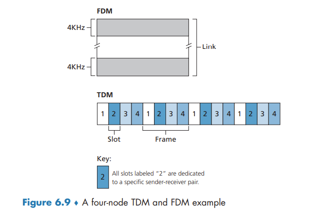

Multiple Access Links and Protocols
Multiple Access Links and Protocols
A point-to-point link consists of a single sender at one end of the link and a single receiver at the other end of the link. a broadcast link, can have multiple sending and receiving nodes all connected to the same, single, shared broadcast channel.
a problem of central importance to the link layer: how to coordinate the access of multiple sending and receiving nodes to a shared broadcast channel—the multiple access problem.
traditional television is a one-way broadcast (simplex). nodes on a computer network broadcast channel can both send and receive (duplex).
Computer networks similarly have protocols—so-called multiple access protocols—by which nodes regulate their transmission into the shared broadcast channel.
more than two nodes can transmit frames at the same time. When this happens, all of the nodes receive multiple frames at the same time; that is, the transmitted frames collide at all of the receivers. the broadcast channel is wasted during the collision interval.
We can classify just about any multiple access protocol as belonging to one of three categories: channel partitioning protocols, random access protocols, and taking-turns protocols.
ideally, a multiple access protocol for a broadcast channel of rate R bits per second should have the following desirable characteristics:
- When only one node has data to send, that node has a throughput of R bps.
- When M nodes have data to send, each of these nodes has a throughput of R/M bps. This need not necessarily imply that each of the M nodes always has an instantaneous rate of R/M, but rather that each node should have an average transmission rate of R/M over some suitably defined interval of time.
- The protocol is decentralized; that is, there is no master node that represents a single point of failure for the network.
- The protocol is simple, so that it is inexpensive to implement.
Channel Partitioning Protocols
time-division multiplexing (TDM) and frequency-division multiplexing (FDM) are two techniques that can be used to partition a broadcast channel’s bandwidth among all nodes sharing that channel.

TDM is appealing because it eliminates collisions and is perfectly fair: Each node gets a dedicated transmission rate of R/N bps during each frame time. However, it has two major drawbacks. First, a node is limited to an average rate of R/N bps even when it is the only node with packets to send. A second drawback is that a node must always wait for its turn in the transmission sequence—again, even when it is the only node with a frame to send.
FDM divides the R bps channel into different frequencies (each with a bandwidth of R/N) and assigns each frequency to one of the N nodes. FDM shares both the advantages and drawbacks of TDM.
A third channel partitioning protocol is code division multiple access (CDMA). CDMA assigns a different code to each node. Each node then uses its unique code to encode the data bits it sends. CDMA networks have the wonderful property that different nodes can transmit simultaneously and yet have their respective receivers correctly receive a sender’s encoded data bits (assuming the receiver knows the sender’s code) in spite of interfering transmissions by other nodes.
Random Access Protocols
In a random access protocol, a transmitting node always transmits at the full rate of the channel, namely, R bps. When there is a collision, each node involved in the collision repeatedly retransmits its frame (that is, packet) until its frame gets through without a collision. But when a node experiences a collision, it doesn’t necessarily retransmit the frame right away. Instead it waits a random delay before retransmitting the frame.
Slotted ALOHA
The operation of slotted ALOHA in each node is simple:
- When the node has a fresh frame to send, it waits until the beginning of the next slot and transmits the entire frame in the slot.
- If there isn’t a collision, the node has successfully transmitted its frame and thus need not consider retransmitting the frame. (The node can prepare a new frame for transmission, if it has one.)
- If there is a collision, the node detects the collision before the end of the slot. The node retransmits its frame in each subsequent slot with probability p until the frame is transmitted without a collision.
slotted ALOHA allows a node to transmit continuously at the full rate, R, when that node is the only active node.
A slot in which exactly one node transmits is said to be a successful slot. The efficiency of a slotted multiple access protocol is defined to be the long-run fraction of successful slots in the case when there are a large number of active nodes, each always having a large number of frames to send.
Then the probability that a given slot is a successful slot is the probability that one of the nodes transmits and that the remaining N - 1 nodes do not transmit.
Because there are N nodes, the probability that any one of the N nodes has a success is Np(1 - p)^(N-1).
And to obtain the maximum efficiency for a large number of active nodes, we take the limit of Np'(1 - p')^(N-1) as N approaches infinity.
ALOHA
If a transmitted frame experiences a collision with one or more other transmissions, the node will then immediately (after completely transmitting its collided frame) retransmit the frame with probability p. Otherwise, the node waits for a frame transmission time. After this wait, it then transmits the frame with probability p.
Thus, the probability that a given node has a successful transmission is p(1 - p)^(2(N-1)). the maximum efficiency of the pure ALOHA protocol is only 1/(2e)—exactly half that of slotted ALOHA.
Carrier Sense Multiple Access (CSMA)
There are two important rules for polite human conversation:
- Listen before speaking. In the networking world, this is called carrier sensing
- If someone else begins talking at the same time, stop talking. In the networking world, this is called collision detection
These two rules are embodied in the family of carrier sense multiple access (CSMA) and CSMA with collision detection (CSMA/CD)
it is evident that the end-to-end channel propagation delay of a broadcast channel—the time it takes for a signal to propagate from one of the nodes to another—will play a crucial role in determining its performance. The longer this propagation delay, the larger the chance that a carrier-sensing node is not yet able to sense a transmission that has already begun at another node in the network.
Carrier Sense Multiple Access with Collision Detection (CSMA/CD)
When a node performs collision detection, it ceases transmission as soon as it detects a collision.
summarize CSMA/CD protocol operation from the perspective of an adapter (in a node) attached to a broadcast channel:
- The adapter obtains a datagram from the network layer, prepares a link-layer frame, and puts the frame adapter buffer.
- If the adapter senses that the channel is idle (that is, there is no signal energy entering the adapter from the channel), it starts to transmit the frame. If, on the other hand, the adapter senses that the channel is busy, it waits until it senses no signal energy and then starts to transmit the frame.
- While transmitting, the adapter monitors for the presence of signal energy coming from other adapters using the broadcast channel.
- If the adapter transmits the entire frame without detecting signal energy from other adapters, the adapter is finished with the frame. If, on the other hand, the adapter detects signal energy from other adapters while transmitting, it aborts the transmission (that is, it stops transmitting its frame).
- After aborting, the adapter waits a random amount of time and then returns to step 2.
What we’d like is an interval that is short when the number of colliding nodes is small, and long when the number of colliding nodes is large. The binary exponential backoff algorithm elegantly solves this problem. a frame that has already experienced n collisions, a node chooses the value of K at random from {0, 1, 2, .... 2^n-1}
CSMA/CD Efficiency
Here we simply state the following approximation: Efficiency = 1 / (1 + 5dprop/dtrans)
Taking-Turns Protocols
The polling protocol requires one of the nodes to be designated as a master node. The master node polls each of the nodes in a round-robin fashion. The polling protocol eliminates the collisions and empty slots that plague random access protocols. This allows polling to achieve a much higher efficiency. Drawbacks: 1) the protocol introduces a polling delay 2) if the master node fails, the entire channel becomes inoperative.
token-passing protocol: no master node. A small, special-purpose frame known as a token is exchanged among the nodes in some fixed order. When a node receives a token, it holds onto the token only if it has some frames to transmit; otherwise, it immediately forwards the token to the next node. Token passing is decentralized and highly efficient. the failure of one node can crash the entire channel. Or if a node accidentally neglects to release the token, then some recovery procedure must be invoked to get the token back in circulation.
DOCSIS: The Link-Layer Protocol for Cable Internet Access
abbr: Data-Over-Cable Service Interface Specifications
we’ll find aspects of each of these three classes of multiple access protocols with the cable access network. FDM, TDM, random access, and centrally allocated time slots all within one network!
a cable access network typically connects several thousand residential cable modems to a cable modem termination system (CMTS)
DOCSIS uses FDM to divide the downstream (CMTS to modem) and upstream (modem to CMTS) network segments into multiple frequency channels. Each upstream and downstream channel is a broadcast channel. Frames transmitted on the downstream channel by the CMTS are received by all cable modems receiving that channel; however, there is no multiple access problem. The upstream direction, however, is more interesting and technically challenging, since multiple cable modems share the same upstream channel (frequency) to the CMTS, and thus collisions can potentially occur.
The CMTS explicitly grants permission to individual cable modems to transmit during specific mini-slots. The CMTS accomplishes this by sending a control message known as a MAP message on a downstream channel to specify which cable modem (with data to send) can transmit during which mini-slot for the interval of time specified in the control message.
cable modems send mini-slot-request. mini-slot-request frames are transmitted in a random access manner and so may collide with each other. When a collision is inferred, a cable modem uses binary exponential backoff to defer the retransmission of its mini-slot-request frame to a future time slot.